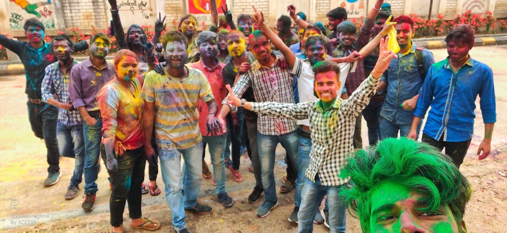

We came back from home after a small vacation. Yesterday was our registration for next i.e. 6th semester. We had to follow same procedures which we are following from past 5 semesters. There are also 6 subjects in this semester. These subjects are- ‘Industrial Economics, Cyber Security, Control System, Digital Electronics, Digital Design Using Verilog & Microwave Engineering’. Our classes will be starting from tomorrow.
Prince told us today that there is a two day workshop on Machine Learning in MNNIT Allahabad (Prayagraj). We are interested in it so we did registration for it. We are five who are going in that workshop (Shiv Kumar, Abhishek Patel, Rohit Maurya and Sagar Maurya). The registration fee is ₹ 450, we paid it through PhonePe and then we found our hall passes. I and Shiv Kumar have never gone Prayagraj before so we are exited more. We all friends will move towards Prayagraj tomorrow.
25 Jan 2020, Saturday
We reached here last night, we had not booked hotel so we are staying at Sagar’s friend’s home. Today was the first day of workshop, it was boring and dull. A final year student from MNNIT was taking the class. He gave us the Anaconda Software and taught us how to use it. At the end we were given the certificate of attendance.
We were hungry when we came back to room. Sagar took us to a restaurant named Eat On, we ate famous Biryani there. The Biryani was awesome in taste. After eating, we walked across Civil Lines and many different places. There is occasion of Magh Mela here. We decided to go to see the fair. We went there by foot and saw the fair and went to Sangam, spent some time there and then we came back to the room. We were carrying our backpacks on our back whole time and we walked more than ‘18 KM’ in evening today. That’s why our feet are moaning in pain. Now we are going to sleep.
26 Jan 2020, Sunday
Today was the second day of workshop and also The Republic day. We had not gone to attend the workshop because it was boring and also we had got our certificates. In the morning my friends were planning to bath in Sangam. I also went with them. We bathed, play and swam there for about one hour. It is Magh-Mela time so there were so many people there. The water was icy cold while we enter in the river. Our leg became solidified and senseless when we entered in water but became normal after few minutes. I enjoyed so much my first bath in The Sangam. Abhishek & Shiv Kumar know swimming, they were teaching me. After bath we change our clothes and walk around there. There were many Siberian Birds; we clicked their photos and also our photos with them. After some rest there we planned to visit many temples near the river. It was 12:00 in noon so we went to a restaurant and took lunch. Then we went back to room and I talked to my Mummy a few minutes and we packed our bags to come back Tirwaganj. We reached at the station and took an intercity train to Kanpur. We are in the train now and it is fully empty, there is no one literally no one in our coach except us. We are walking here and there and chanting because there is nobody to stop us. We may reach Kanpur by 10:00 pm and at our room till morning.
28-30 Jan 2020
There is Satyam’s sister’s marriage on 29 January. He invited our entire friend circle to his home for marriage ceremony. Satyam is from Anpara (Sonbhadra) so Neeraj booked our train tickets to Anpara. We are 6 persons going there. Arshad, Neeraj, Shiv Shakti, Prateek and Sujeet are with me. Our train is from Allahabad Junction at night so we have to reach Prayagraj before time. Now I am ready with my packed bag and Prateek with his Trolley suitcase. We will leave by 11:00 O’clock together.
We have reached Prayagraj now and it was a difficult journey till here. Because when we came at Kannauj city, there was no bus to Kanpur so we took van. And when we had arrived Kanpur, the train was about to departure and we bought tickets and ran to catch the train. The train was fully crowded and we travelled by standing near the gate. After arriving here we had gone to a restaurant and had dinner.
Today is 29th morning and we are in the train. I am at lower window seat. Everyone is sleeping but I am viewing and enjoying the hills and trench. It is my first trip to any hill station. I am taking pictures of the nature and beautiful scenes. It is very amazing to see them and train is running slowly so I am enjoying the whole moment. The train is scheduled to reach Anpara by 10:00 am. Everyone is sleeping; I am going to wake up them.
We reached Anpara at 11:30 and Prateek suggested us to go to Satyam’s home by foot instead of bus. It was 2 Km from railway station. Sujeet is also from Anpara so he became our guide in this journey. Satyam was waiting for us and when we arrived there he welcomed us and showed us his home, playground and other places. Then after rest, bath and suited up we went to the place of marriage. We enjoyed, danced and eat delicious food there. We all were awake all night and saw every custom of marriage.
31 Jan 2020, Friday
Today, there was our returning train from Anpara Station at 03:00 am. We had planned yesterday for mountain trekking. So we woke up early and get ready to go there. Here also Sujeet was our guide but when we went to the foot of hill, Sujeet forgot the way to climb the hill. Then we decided to go from bush. After one hour of hard work and from thorny bush and bumpy stones, we reached the top of the mountain. Our clothes were scratched and torn, our jeans pants became Damage Jeans. We could see the whole Anpara from there. We took some pictures there. We saw one golden hill at a distance from there. We decided to go there and climb that hill also. We all took a stick in our hand before climbing the second mountain and started a song ‘Kar Har Maidan Fateh’ from Sanju Movie. Our guide Sujeet should have to lead us but he was lagging behind. It is winter season but we all were soaking with sweats. The mountain trekking is in my wish list from my childhood and finally I achieved it.
We came back to room before time and take bath and become fresh to catch the returning train. Satyam and his family dropped us by the bus stand. All of us were very tired so after few minutes of sitting in the train we all fell asleep. We will reach Kannauj by the next morning. My mother was angry on me because I had not talked to her regularly since last few days but anger was temporary.
10 Feb 2020, Monday
Today is Monday, and there were only 3 lectures today. Two were before lunch break and one after lunch. During lunch break at Shiv Kumar’s room we decided to do class bunk and play Cricket. We all Jai Bhavani members and Shiv Kumar’s roommates were going to play Cricket since last few days there when classes go over. Today we had started playing and first inning was going on. I was fielding at short leg and Abhishek Patel was batting and Shiv Kumar was bowling. Abhishek hit the ball very hard and I was trying to catch it. The ball came and hit my right hand thumb. The hit was so hard that darkness came before my eyes. I sat there for a moment and trying to stop my tears. My all friends came near me and they were trying to ease my pain. I did not play a single ball today; I was only watching the match from a distance due to injury. Then after we came back to our room and Abhishek, Shiv Kumar, Kamendra put the paste of Turmeric-Lime on my thumb and wrapped a bandage. My thumb is swollen badly. I told my Mom & Dad about wound, they suggested me to go to doctor or to buy medicine. My dad told me name of some medicines, I went to a medical store and bought those medicines. I have eaten that medicine after dinner but my thumb is still paining and I am unable to sleep so I am writing this.
14 Feb 2020, Friday
Today, there was the test of Industrial Economics; Dr. Aakash Agrawal Sir is our subject teacher. I talked to Aakash sir last night that my thumb has wounded few days before. I told him that I can’t write with my wounded hand. Then he agreed to me and told that I can leave the test but I should have to do those questions as my assignment. I had to write the test question’s answers as my assignment and had to submit later. But he didn’t take test today because many students were negotiating to postpone the exam for next Monday.
21 Feb 2020, Friday
There is my brother’s birthday today. I had greeted and congratulated my brother for his birthday when I had woken up in the morning. Today is Mahashivratri also and I have fast today. Umar Singh invited me to go temple with him. He was going with some boys and girls of our branch. I also ask some other friends, only Kamendra agreed to go. They had reserved an auto rickshaw. We left early in the morning to go temple. The temple is situated in between Kannauj city, its name is Gauri Shankar Temple. We did worship and spent some time there. Then we went to see the ruins of fort of Kannauj’s king. We came back to our room in the noon. Aditya Verma was very angry at us because I and Kamendra went with others and didn’t take him with us to the temple. When we were going temple he was sleeping, Kamendra asked him but he replied that he will go later. He was very angry that why we didn’t go with our jai Bhavani group mates. After a long discussion and argument we were able to calm him down.
06 Mar 2020, Friday

Our first CT exam for this semester had started from 4th March. There were two exams on first day and three exams on second day. And today was the last exam. Yesterday we had made plan to play Holi after exam get over because we will meet again after Holi. Aditya & Abhishek Patel has brought colours and Gulal from Tirwa. The exam ended at 11:00 AM and I messaged in our College WhatsApp group to come at ground for Holi fun. We all played and enjoyed Holi for more than an hour. Every boys and girls were full of colours. We also took some photos and then we went to our room. Prateek had gone to home to escape from the colours but Sagar, Kamendra & Shubham came to our room and put colours on him.
There is festival holiday from today and we are going home so I bathed and clean the colours from my face. Prateek and I had train at 02:40 PM from Kannauj. When we reached the station, I saw that there were more than 200 students of our college at railway station to catch the same train. The Utsarg Express is the only train in the noon for Lucknow and Kanpur that’s why it was so much crowded. The train came on time and we sit in our coach. My all friends were also with me till Kanpur. Our senior Abhishek Kushwaha sir was also in the same coach, Prince and I sat with him. He is also from Ballia and SR senior of Abhishek Patel. It is 10:00 PM now and train is at Barabanki Station and I talked to mom few minutes before and now am going to sleep. Tomorrow is my Mom’s birthday and I will reach home by tomorrow morning. I can celebrate her birthday this year with her.
14 Mar 2020, Saturday
The Holi was on 10th March and it passed beautifully. Today is Saturday and there was my train ticket to go back to the college. The train was at 7:00 PM. But a notice came from our university AKTU that all the colleges will remain shut down till 31 March due to COVID-19. WHO (World Health Organisation) has declared that spreading of this CORONA Virus is a Pandemic. The first COVID-19 patient was recognised in China in its Wuhan city on 31 December 2019. Now it is rapidly spreading across the whole world. There are total 100 confirmed COVID-19 cases in India till today and out of which 18 cases came today. Shiv Kumar, Sagar and Abhishek Patel had not come to home in this vacation and now they had to spend more time alone at Tirwaganj.
24 Mar 2020, Tuesday
Today, our Honourable Prime Minister Narendra Modi addressed the nation at his favourite time at 8:00 pm. He put nationwide lockdown for 21 days which is from tomorrow till 14 April 2020. The COVID-19 patients are increasing continuously in India and also in the whole world, there are total 536 confirmed cases and 37 cases came today. All the schools, colleges, religious places, Private & Public Transports, Railways and Airways and every other public place will be closed in this lockdown. This means that we will be unable to go college before unlock. All of my friends are at home except Abhishek Patel & Shiv Kumar. Both had decided not to go home so they are trapped. Shiv Kumar is at his any relative at Kanpur and Abhishek is at Tirwaganj.
Today is 30th March; it is sixth day of lockdown. No one is looking outside and the busy markets are also empty. Everyone is staying tight inside their houses. Everybody is scared about the spread of this Lethal Virus. Our life seems like Residential Evil, looks like the world is going to end.
2 Apr 2020, Thursday
Our college is closed due to lockdown so our teachers have started our online classes from today. All our teachers have made classroom at Google Classroom app and Zoom app and asked us to join. They will send lectures materials and notes at Classroom app and take meetings at Zoom app. Gaurish Sir is taking classes from few days before, he is teaching us Control System in this semester. He is sharing his lecture videos at Classroom app and also he asked questions on it. After solving the questions and submitting the answers we are getting our attendance of that respective lecture. One good thing is happening in this lockdown that India is getting digitalized. Many office and organisation employees are working from home using technology and Internet, which is indicating the rapid growth in the job in the IT sector in future.
27 & 28 Apr 2020
Few days ago, a notice came from our college that the class tests will be held online this time. Which were scheduled in these two days. Our tests are being held via Google Sheet & Classroom and apart from this Ashwini sir took his subject‚Äôs test via his Gnomio Website. This time the test was fully different from last semesters. The tests were of one hour and on different timings. Few minutes before the exam, we all friends made conference calls and did cheating in every test. First time ever I did cheating in any exam. There was also a good thing in this online test that we found our marks a few minutes after the tests. Everyone in these tests are toppersüòú, means everybody got good marks in every subjects because of cheating and preplanning.
29 Apr 2020, Wednesday
Today UGC (University Grants Commission) made an announcement that the semester exams of all the universities in India will be cancelled for this session. There will be exams of only final year students and these exams will be online from home, students need not to go college. All the other students except final year will be promoted to the next semester. This is due to the lockdown and pandemic because of continuous increase in the COVID-19 patients. The confirmed patients of COVID-19 in India crossed 33 thousand number and 1,738 have been identified today. The condition of Europe and America are even worse, there are more than 1 lakh cases in those countries.
Our time at home is not passing while playing indoor games and doing house works. We neither have option to go outside to play nor to wander anywhere. Every markets and public places are close. Life is being boring. So we do video call to our friends about everyday and talk hours.
10 Jun 2020, Wednesday
Today I got an email from our college, in which it is written that Coursera is offering free online courses and specialisations in different fields. Coursera is a worldwide online learning platform founded in 2012 by Stanford University’s computer science professors Andrew Ng and Daphne Koller that offers MOOC, specializations, degrees and professional courses. Prince had told me about Coursera last month, he was doing ‘Internet of Things’ course from there and I also have enrolled in it for free with the help of our senior Abhishek Kushwaha sir. Our semester exams are not going to happen and I am free in this lockdown so I decided to gain an extra knowledge from it. I joined the Python Programming course which is being offered by University of Michigan’s Professor “Charles Russell Severance”.
28 Jul 2020, Tuesday
Our result for 6th semester was declared yesterday but it was showing only the grades not the numbers. Numbers has started showing from today. First time ever, students can see their results without giving exams. Our results were declared in reference of our internal marks and last semester results. I got 755/1000 marks which is about equal to the previous semester. I don’t understand why teachers do not give me good internal marks. It is going on since first semester. I attend classes properly, bring good marks in CT and also don’t fight or argue with the teachers, then why? Why this discrimination?
 Today, there was our returning train from Anpara Station at 03:00 am. We had planned yesterday for mountain trekking. So we woke up early and get ready to go there. Here also Sujeet was our guide but when we went to the foot of hill, Sujeet forgot the way to climb the hill. Then we decided to go from bush. After one hour of hard work and from thorny bush and bumpy stones, we reached the top of the mountain. Our clothes were scratched and torn, our jeans pants became Damage Jeans. We could see the whole Anpara from there. We took some pictures there. We saw one golden hill at a distance from there. We decided to go there and climb that hill also. We all took a stick in our hand before climbing the second mountain and started a song ‘Kar Har Maidan Fateh’ from Sanju Movie. Our guide Sujeet should have to lead us but he was lagging behind. It is winter season but we all were soaking with sweats. The mountain trekking is in my wish list from my childhood and finally I achieved it.
Today, there was our returning train from Anpara Station at 03:00 am. We had planned yesterday for mountain trekking. So we woke up early and get ready to go there. Here also Sujeet was our guide but when we went to the foot of hill, Sujeet forgot the way to climb the hill. Then we decided to go from bush. After one hour of hard work and from thorny bush and bumpy stones, we reached the top of the mountain. Our clothes were scratched and torn, our jeans pants became Damage Jeans. We could see the whole Anpara from there. We took some pictures there. We saw one golden hill at a distance from there. We decided to go there and climb that hill also. We all took a stick in our hand before climbing the second mountain and started a song ‘Kar Har Maidan Fateh’ from Sanju Movie. Our guide Sujeet should have to lead us but he was lagging behind. It is winter season but we all were soaking with sweats. The mountain trekking is in my wish list from my childhood and finally I achieved it.